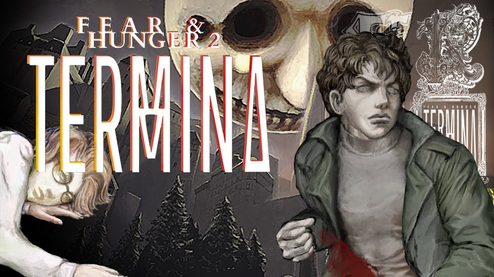

🮠Fear and Hunger

Fear and Hunger é um RPG de terror sombrio criado por Miro Haverinen. O jogo combina combate tático por turnos, atmosfera opressiva e escolhas brutais em um mundo medieval corrompido pela fome, desespero e entidades cósmicas.
- Lançado em: 2018
- Gênero: Terror/RPG
- Estilo: Pixel art, brutalidade e permadeath
- Destaque: Sistema de membros e decisões com peso real
ğŸ Fear and Hunger: Termina

Termina é a sequência espiritual de Fear and Hunger. Situado em uma realidade alternativa mais moderna, o jogo expande as mecânicas do original com novos personagens, inimigos grotescos e uma narrativa influenciada por horrores psicológicos e culturais.
- Lançado em: 2022 (Acesso antecipado)
- Gênero: Terror psicológico com mecânicas de sobrevivência
- Estilo: 1930s surreal horror
- Destaque: 14 personagens jogáveis com histórias únicas
🧠Amnesia: The Dark Descent

Amnesia é um clássico do terror em primeira pessoa desenvolvido pela Frictional Games. O jogador acorda em um castelo escuro e decadente sem memórias, sendo caçado por criaturas enquanto tenta manter a sanidade.
- Lançado em: 2010
- Gênero: Terror psicológico em primeira pessoa
- Estilo: Narrativa envolvente e foco em atmosfera
- Destaque: Sistema de sanidade e ausência de combate direto